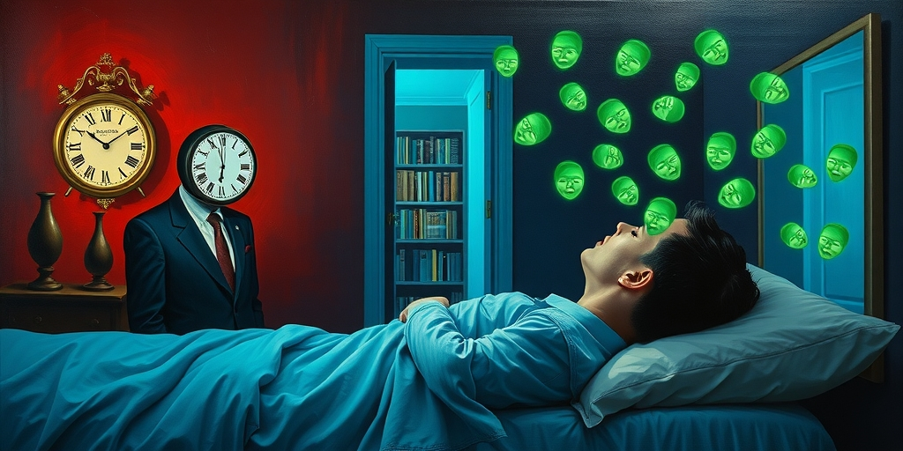
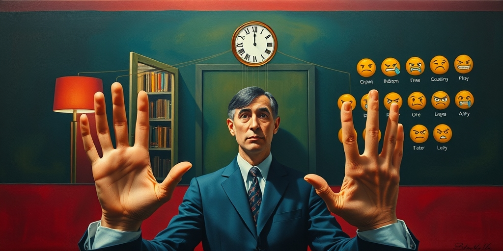
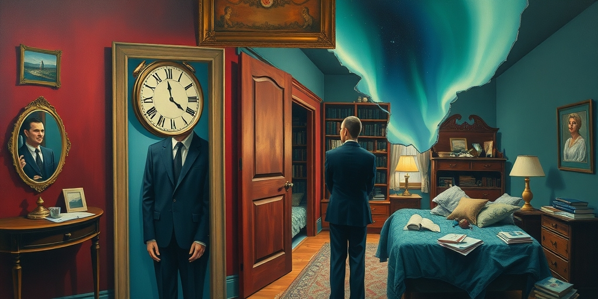
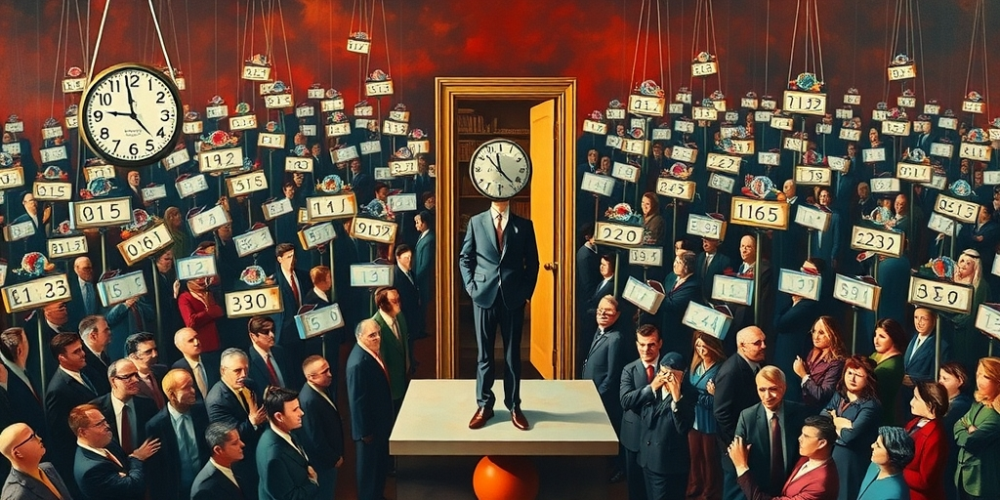
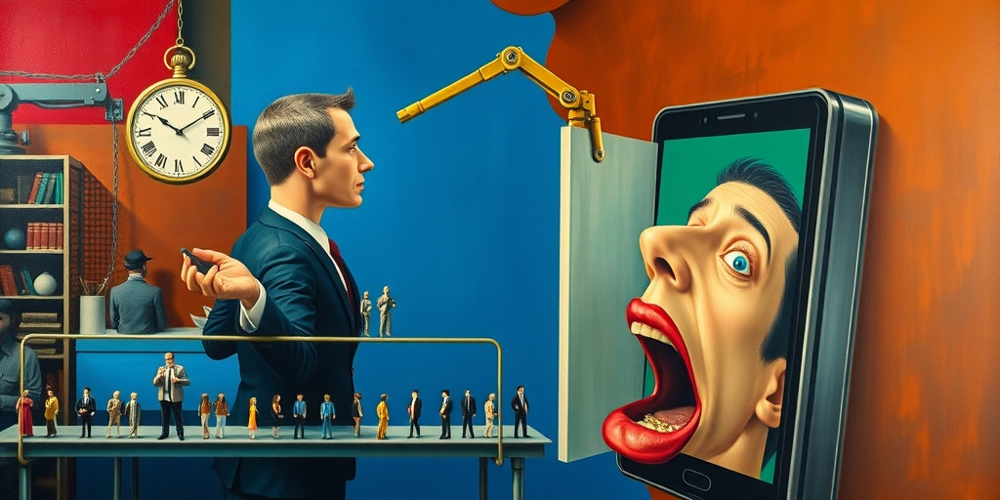

小汪老师的成长洞察 · 属于你的成长专栏
让你停不下来的，不是别人的精彩生活，而是你对自己生活的不满。这种不满不是副作用，是社交媒体卖给你的核心产品。

凌晨两点，你刷到前同事在冰岛看极光，大学同学晒新房钥匙。你关掉手机，觉得自己的生活像一潭死水。你不是第一次这么觉得，但你明天还会继续刷。为什么？因为让你痛苦的，正是让你停不下来的。
马斯克说他讨厌 Instagram，早就删了。他称这类社交媒体是攀比的温床，偷走快乐的贼。每个人展示的都是精心筛选的高光时刻。你拿自己不被筛选的日常去跟这些百分之一的精彩做对比，自然会觉得不如人。但这只是最浅的一层。
真正的问题在于，平台不靠让你快乐赚钱。一个让你刷完感到平静和满足的产品，在商业上是失败的。它需要你感到某种不足，然后继续刷，继续贡献广告时长。比较不是社交媒体的意外副作用，而是它的核心产品。

算法的优化目标不是你的幸福感，是你在屏幕上停留的时间。人类心理学反复验证：负面社会比较激发的情绪——嫉妒、焦虑、不甘——是极其高效的注意力粘合剂。你看到别人过得比你好，你不会平静地关掉手机。你会继续刷，看看还有谁过得比你好。
算法不需要故意让你焦虑。它只需要给高互动内容更多曝光。引发比较的内容天然互动率高——人们会点赞表示认可，会评论表达羡慕或酸涩，会转发给朋友讨论。这些行为都是信号，告诉算法：这个内容能留住人。于是它被推给更多人。
这是一个自激回路。你刷到比较型内容，感到焦虑，更频繁地刷，产生更多互动数据，算法继续推荐类似内容。你以为是自己在选择看什么，其实是算法在选择让你看什么。而它选择的标准，是让你停不下来。

社交媒体造成了一种现象，社会学家叫它“情境坍塌”。在真实生活中，你看见一个人的全部——他加班到崩溃，他和伴侣吵架，他早上没洗头。这些日常情境构成了你对“正常生活”的完整认知。你知道每个人都有狼狈的一面。
社交媒体把这层完整的上下文抽走了，只留下表演。你比较的对象不再是一个完整的人，而是一个被剥离了所有摩擦和挣扎的形象。成就之所以有意义，恰恰是因为它来之不易。但当过程被隐藏，只剩结果，所有人的生活看起来都轻而易举，唯独你的充满了阻力。
你以为你在和一个人比较，其实你在和一个不存在的人比赛。那个人没有疲惫，没有犹豫，没有失败。他的生活是一支永远只播高光时刻的预告片。你怎么可能赢过预告片？

点赞数、粉丝数、浏览量把模糊的社会认可变成了一个可视化的排行榜。以前你模糊地感知自己在群体中的位置，现在它变成了一个数字。这种游戏化带来的焦虑不只是“我够不够好”，而是“我的分数够不够高”。两者是不同的。
前者是质的判断，你对自己价值的整体感受。后者是量的竞争，你时刻被置于一个可排序的系统中。量的竞争永无止境，因为总有人分数更高。你今天获得了一百个赞，明天看到别人获得了一千个。你永远在追赶一个移动的标杆。
更隐蔽的是，这个排行榜没有退出键。你甚至不需要主动比较，平台已经把数字摆在每条内容的旁边。你发了一张照片，系统立刻告诉你获得了多少赞。它像一台体重秤，每次你站上去，它都告诉你一个数字，然后你不由自主地去看别人的数字。

社会比较不是社交媒体发明的。它是人类最古老的本能之一。亚当·斯密在《道德情操论》里就论述过“被人关注和认可的渴望”。但前社交媒体时代，你的比较范围天然受限——你的邻居、同事、同学，这些人和你的生活条件大致在一个量级上。
社交媒体把比较池从几十人扩展到了几十亿，并且用算法从中筛选出最能刺激你的那部分。这本质上是把一个古老的心理机制工业化、规模化了。就像工业革命把手工生产变成了流水线，社交媒体把社会比较变成了流水线——按需供给、个性化推荐、无限滚动。
还有一个更微妙的维度：选择悖论在社会身份上的投射。巴里·施瓦茨说，更多选择不会带来更多幸福，只会带来更多焦虑。社交媒体让你看到了无限多的可能自我。每一个你刷到的精彩人生都暗示着一条你本可以选择但没有选择的路。这不是“别人比我好”的痛苦，而是“我本可以成为另一个人”的痛苦。后者更难摆脱，因为它攻击的不是你的现状，而是你的可能性。
写给你的话
我们不可能人人都像马斯克那样删掉社交媒体。大多数人的工作、社交、信息获取都绑在这个系统上。离开不是选项。但认知本身就是一种防御。你能看见这台不满制造机是怎么运转的，你能识别算法什么时候在利用你的比较本能，你能在感到焦虑时提醒自己：我正在和预告片比赛。明知是陷阱却离不开，这是当代人的真实处境。但至少，你可以选择不在陷阱里责备自己。
小汪老师的成长洞察 · 属于你的成长专栏